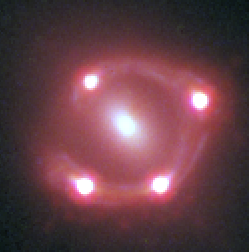
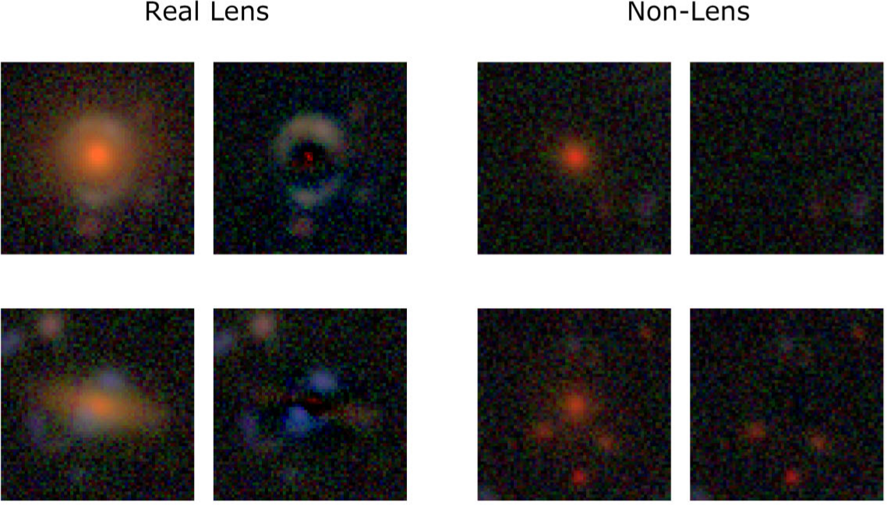
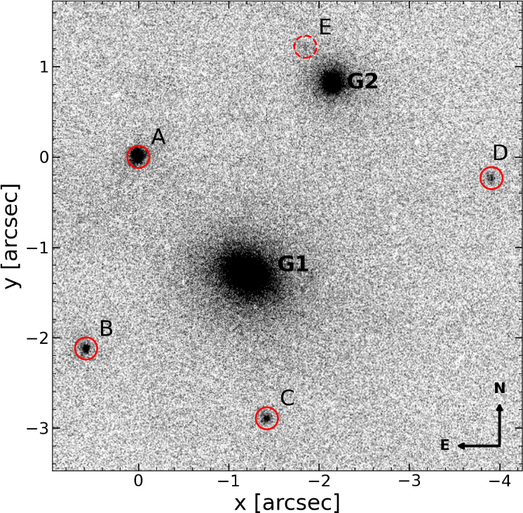
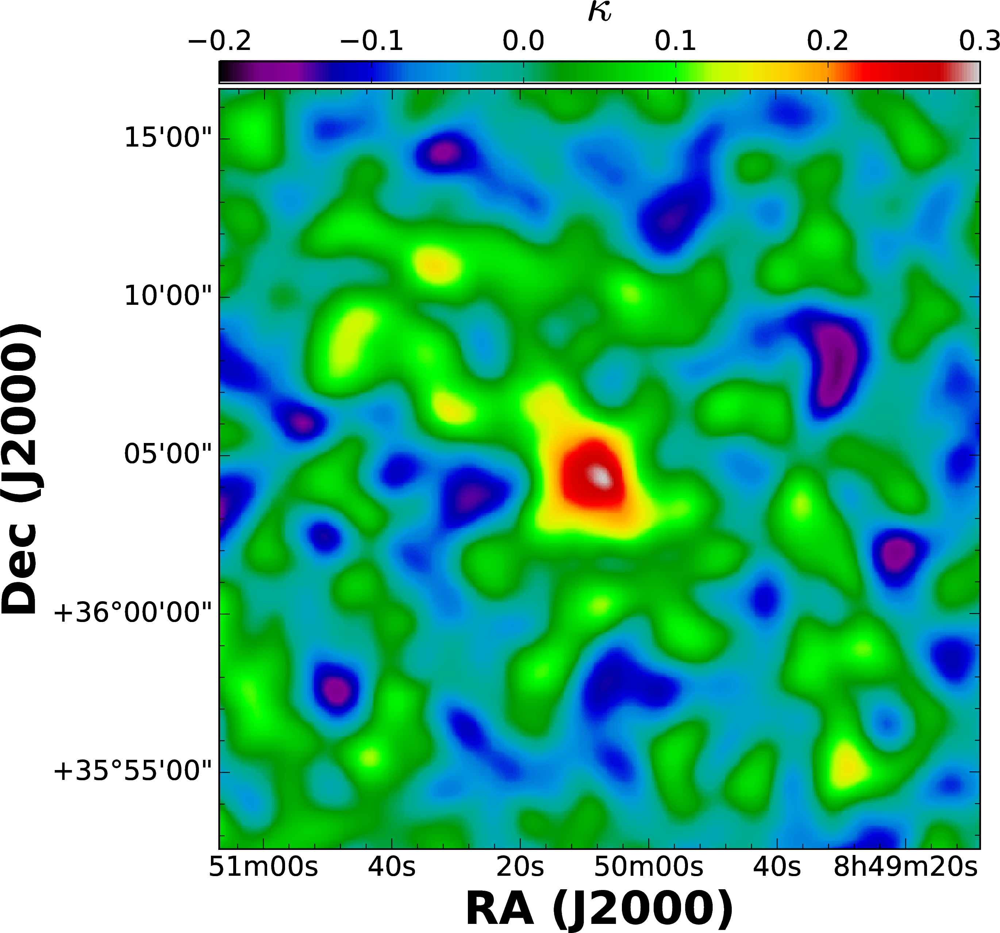

Research
My research focuses on observational cosmology and extragalactic astronomy. I primarily use strong gravitational lensing — the bending of light by massive structures — as a probe of cosmology, galaxy evolution, and dark matter.
Research Projects

H0LiCOW / TDCOSMO
The TDCOSMO project aims to constrain the Hubble constant (H0) using strongly-lensed quasars by measuring the time delay between multiple images. This technique provides a constraint completely independent of probes such as the CMB or the Cepheid distance ladder, and thus is a key test of systematics for the ongoing "Hubble tension".

Lens Searches
The Hyper Suprime-Cam Subaru Strategic Program (HSC SSP) is a wide-area multi-band imaging survey with the 8-m Subaru telescope covering over 1000 deg2 of the sky. Using various methods, including machine-learning based searches, the strong lensing working group has discovered hundreds of strong lens candidates at all scales as part of our program, the Survey of Gravitationally lensed Objects in HSC Imaging (SuGOHI). These search methods can also be applied to Rubin/LSST.

Lensed Transients
Lensed transients, such as supernovae, are becoming an increasingly prominent area of research in the era of Rubin/LSST, Euclid and Roman. We can take advantage of the lensing effect to study their physical properties in detail, as well as use them for time-delay cosmography.

Environments of Strong Lenses
Strong lensing is biased toward the most massive galaxies, which are known to cluster. Understanding the environments and line-of-sight structure toward lenses is necessary to account for perturbations that can bias results from lensing.